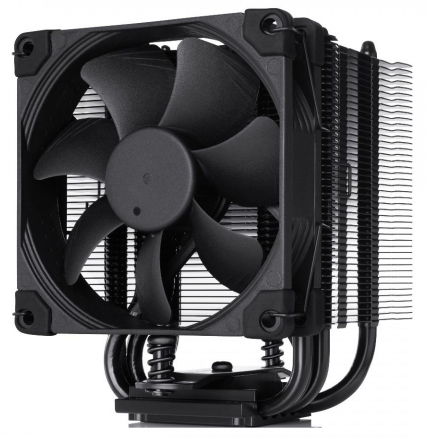

A motherboard (also called mainboard, main circuit board, or mobo) is the main printed circuit board (PCB) in general-purpose computers and other expandable systems. It holds and allows communication between many of the crucial electronic components of a system, such as the central processing unit (CPU) and memory, and provides connectors for other peripherals. Unlike a backplane, a motherboard usually contains significant sub-systems, such as the central processor, the chipset's input/output and memory controllers, interface connectors, and other components integrated for general use.
A central processing unit (CPU), also called a central processor, main processor or just processor, is the electronic circuitry that executes instructions comprising a computer program. The CPU performs basic arithmetic, logic, controlling, and input/output (I/O) operations specified by the instructions in the program. This contrasts with external components such as main memory and I/O circuitry, and specialized processors such as graphics processing units (GPUs).
A graphics processing unit (GPU) is a specialized electronic circuit designed to rapidly manipulate and alter memory to accelerate the creation of images in a frame buffer intended for output to a display device. GPUs are used in embedded systems, mobile phones, personal computers, workstations, and game consoles.
A power supply unit (PSU) converts mains AC to low-voltage regulated DC power for the internal components of a computer. Modern personal computers universally use switched-mode power supplies. Some power supplies have a manual switch for selecting input voltage, while others automatically adapt to the mains voltage.
Random-access memory (RAM) is a form of computer memory that can be read and changed in any order, typically used to store working data and machine code. A random-access memory device allows data items to be read or written in almost the same amount of time irrespective of the physical location of data inside the memory, in contrast with other direct-access data storage media, where the time required to read and write data items varies significantly depending on their physical locations on the recording medium, due to mechanical limitations such as media rotation speeds and arm movemen
A hard disk drive (HDD), hard disk, hard drive, or fixed disk is an electro-mechanical data storage device that stores and retrieves digital data using magnetic storage and one or more rigid rapidly rotating platters coated with magnetic material. The platters are paired with magnetic heads, usually arranged on a moving actuator arm, which read and write data to the platter surfaces. Data is accessed in a random-access manner, meaning that individual blocks of data can be stored and retrieved in any order. HDDs are a type of non-volatile storage, retaining stored data even when powered off. Modern HDDs are typically in the form of a small rectangular box.
A solid-state drive (SSD) is a solid-state storage device that uses integrated circuit assemblies to store data persistently, typically using flash memory, and functioning as secondary storage in the hierarchy of computer storage. It is also sometimes called a semiconductor storage device, a solid-state device or a solid-state disk, even though SSDs lack the physical spinning disks and movable read-write heads used in hard disk drives (HDDs) and floppy disks.

Computer cooling is required to remove the waste heat produced by computer components, to keep components within permissible operating temperature limits. Components that are susceptible to temporary malfunction or permanent failure if overheated include integrated circuits such as central processing units (CPUs), chipsets, graphics cards, and hard disk drives.
A computer fan is any fan inside, or attached to, a computer case used for active cooling. Fans are used to draw cooler air into the case from the outside, expel warm air from inside and move air across a heat sink to cool a particular component. Both axial and sometimes centrifugal (blower/squirrel-cage) fans are used in computers. Computer fans commonly come in standard sizes, such as 120 mm (most common), 140 mm, 240 mm, and even 360 mm. Computer fans are powered and controlled using 3-pin or 4-pin fan connectors.
A computer case, also known as a computer chassis, tower, system unit, or cabinet, is the enclosure that contains most of the components of a personal computer (usually excluding the display, keyboard, and mouse).